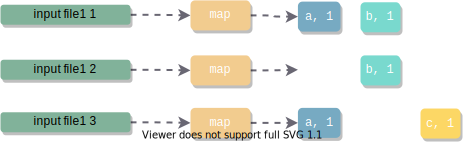

MapReduce详解
本文最后更新于：October 13, 2021 am
为什么会产生MapReduce
面对大量的数据，需要充分利用大量机器的运算资源来提高效率
但是，如何利用大量机器进行并行计算，如何分配数据到各个机器上，如何处理failure，在分布式的情况下都非常复杂
而MapReduce就是用来应对这种复杂性的抽象计算模型 。这个模型可以将大型数据处理任务分解成很多单个的、可以在服务器集群中并行执行的任务，而这些任务的计算结果可以合并在一起来计算最终的结果
MapReduce主要有两个过程：Map和Reduce
Map过程
Map过程将原始数据转换成key/value pairs
以最简单的word count程序为例，这个程序的功能是计算文件中每个单词的出现次数
Map阶段， Map函数接收一个输入文件，对文件中的每一个单词输出一个键值对 (word, occurrence), 这里每个单词出现就记occurrence为1，所以这里的键值对为(word, 1)
由此，我们将一个输入文件map到了一个key/value数组
map(String key, String value):
# key: document name
# value: document contents
for each word w in value:
EmitIntermediate(w, "1")
Reduce
对于map输出的key/value pairs, Reduce是将相同key值的value合并的过程
在word count程序中，map输出了(word, 1)键值对，为了计算一个单词出现的总数，需要将key/value pair中key相同的value加起来
每一个reducer处理特定的word。相同word的key/value pair进入同一个reducer, 统计计数
reduce(String key, Iterator values):
# key: a word
# values: a list of counts
int result = 0
for each v in values:
result += ParseInt(v)
Emit(AsString(result))More Complex
MapReduce实际细节中还包含更复杂的partition, shuffle, merge过程

Map端Shuffle
整体思路
可以预期，map过后，我们会得到无序的键值对，如下所示。每一个key的数据都可能分散在各个位置
a, 1
b, 1
a, 1
c, 1
a, 1
b, 1
c, 1然而reducer是术业有专攻的，在reduce过程中，相同key值的数据需要被送到同一个reducer
若要去一个一个文件全局搜索去寻找对应的key值，效率必然是低下的
因此，我们希望map输出是聚集在一起的, 像下面这样。如此一来，寻找对应的key值就会很快
a, 1
a, 1
a, 1
b, 1
b, 1
c, 1
c, 1当然，为了能够更快定位到reducer需要的key值部分，加上索引是更快捷的做法
我的想法是索引和数据在同一文件，如下图
但似乎一般做法是索引与数据分离，让索引都存在于内存中

接下来考虑如何才能让键值相同的数据聚集在一起呢？
方法1: HashMap
方法2: Sort
用这两种方法的都有。sort耗费时间开销大，hashmap耗费空间开销大。这里我们基于sort
Partition
Map端输出是发送给N个Reducer做Reduce工作
因此，我们需要将Map端的文件映射到Reducer, 相同键值的映射到同一个Reducer, 且尽量保证其负载均衡
这是做Partition的目的。
在Partition方式上，我们为key/value pair增加一个partition属性，这个partition属性是对key计算hash计算得到的，为了一个partition对应一个reducer, 在计算hash时对reducer的数量取模
partition值为几，该key/value pair就会进入第几个reducer
hash得到的partition能够保证相同键值的数据映射到同一个partition, 也就是reducer，但是一个partition不能保证只有一种键值
Collector
一个环状数组，最大限度地利用内存
内存占用到一定程度，就会触发spill, 写入磁盘
环状数组存储两类数据
- 原始的Key-Value数据
Metadata数据：（注意Key, Value的大小不是固定的，所以需要存长度）
- Key的起始位置
- Value的起始位置
- Value的长度
- Partition
选定Equator, 这两类数据以Equator为起点，向两个相反的方向增长
当数据达到一定阈值(比如80%时），Key-Value数据要写入磁盘。
此时，空余的20%缓冲区可以用来接收新来的数据，此前，要重新选定Equator
Sort
Spill触发后，在写入磁盘前，将Collector中的数据按照partition和key对数据进行升序排序
按照Partition排序是为了让相同partition数据的聚集在一起，但是一个partition不是只有一种键值，因此再对键值排序保证了相同键值的数据聚集在一起
注意，不对Key-Value数据排序，而是对Metadata排序
- 读取Metadata, 将Metadata数据按照Partition进行排序
- 在同一Partition中，读取Metadata对应的Key值，按照Key值再次排序
Combine(自定义优化步骤)
将Map输出的key/value pair进行合并，是一个本地reduce过程
比如word count程序，map输出
a, 1
a, 1
a, 1我们就可以定义一个combine程序，将其合并为(a, 3)再发送给reducer
Spill
- 创建磁盘文件
将Collector中的数据按照Metadata排序顺序依次写入文件，写磁盘的时候数据会进行压缩
同时会创建索引文件。索引文件对每一个partition会记录一个三元组
(起始位置，原始数据长度，压缩后的数据长度), 在这个文件中也会存储crc32的校验数据
Merge
在数据量大的时候，有可能进行好几次spill, 产生了多个数据文件和索引文件，这个时候就需要将文件合并
如何获得Spill文件呢—->扫描本地目录, 然后把文件路径存到数据里面，索引文件同理
对于1个Partition，扫描索引文件，得到k个数据文件，做一个k路外部排序
如果设置了combiner, Merge时也会调用combiner合并key相同的数据
Map Shuffle整体结构
Reduce Shuffle
Reduce Shuffle主要有两个过程：
- Copy
- Merge
Copy
将Map得到的数据copy到本地
Merge
做一个数据的外部排序
Reference
[1] 环形缓冲区
[2] Hadoop中的压缩
[3] External Sorting
[4] MapReduce计算框架
本博客所有文章除特别声明外，均采用 CC BY-SA 4.0 协议 ，转载请注明出处！